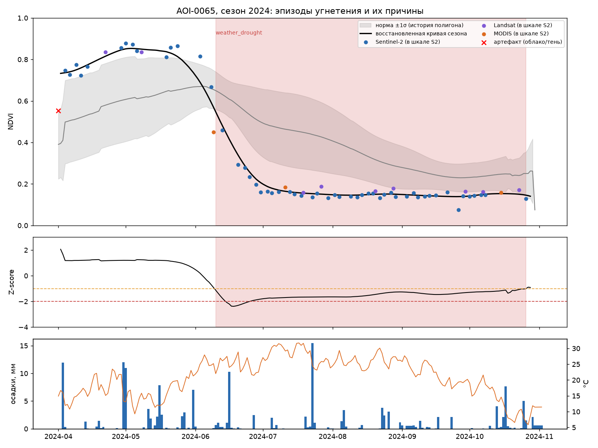
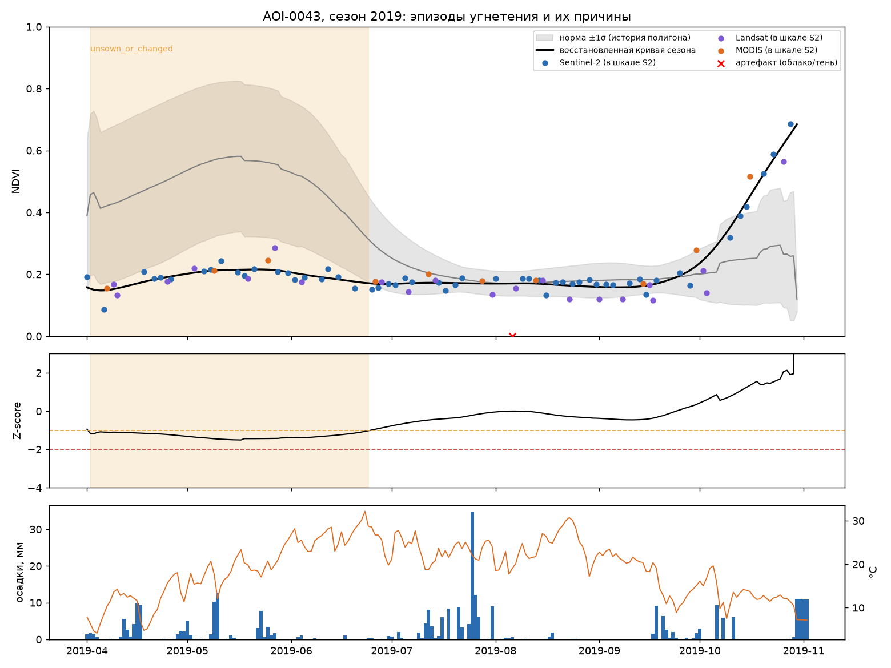
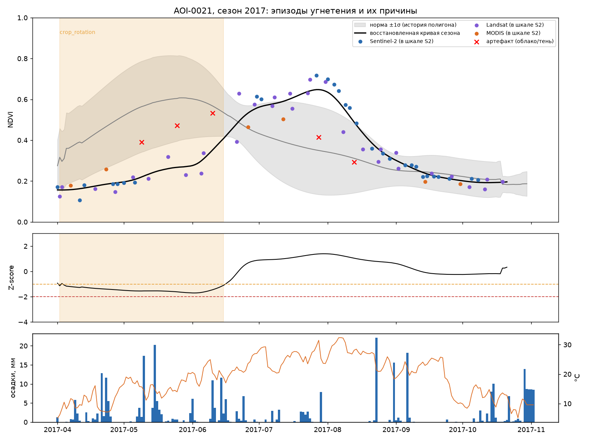

Космохакатон · Ростов-на-Дону · кейс мониторинга полей
Восстанавливаем пропуски в спутниковом ряде NDVI, находим периоды угнетения посевов и объясняем их причину — в веб-сервисе, который сам собирает данные по любому полю на карте.
Зачем это нужно
Облака и разные спутники: между наблюдениями провалы, часть значений отсутствует. Без непрерывной кривой нельзя ни сравнить сезоны, ни поймать момент угнетения.
Landsat даёт NDVI выше Sentinel-2 на 0.037, MODIS — на 0.083. Четверть «угнетений» в исходных данных — просто смена спутника.
Агроному нужен не Z-score, а ответ: поле просело из-за засухи, севооборота или это сбой съёмки — и что с этим делать.
Наш ответ: одна кривая сезона в единой шкале → восстановленные пропуски → сравнение с нормой самого поля → эпизоды угнетения с разбором причины на простом языке.
Данные и разведочный анализ
| train | 39 полей · 30 520 точек |
| test (v2) | 20 полей · 13 164 точки |
| контрольные точки | 2 323 |
| обучение итого | 61 325 точек |
| период | 2010–2024 |
36 графиков EDA и выводы — docs/08, интерактивный дашборд «NDVI-атлас полей» — reports/dashboard/.
Задача 1 · отправная точка
| Метод | RMSE | GapScore |
|---|---|---|
| среднее двух соседей (из ТЗ) | 0.093 | 2.1 |
| линейная интерполяция по времени | 0.094 | 1.7 |
| климатология | 0.159 | 0 |
| сенсорная коррекция без обучения | 0.084 | 4.9 |
| интерполяция «того же сенсора» (oracle) | 0.086 | 4.3 |
Даже если бесплатно знать сенсор скрытой точки, простая интерполяция упирается в 0.084.
Задача 1 · ход работы
| Эксперимент | RMSE | Что выяснили |
|---|---|---|
| baseline ТЗ | 0.093 | точка отсчёта |
| exp-001 LightGBM, 231 признак | 0.0587 | признаки цикла съёмки решают |
| exp-002 обрезка target [−0.1, 1] | 0.0577 | остаток вредит, обрезка помогает |
| exp-003 + SeasonNet, смесь | 0.0559 | смесь сильнее любого нового признака |
| exp-004 CatBoost третьей моделью | 0.0554 | ещё одно дерево почти не добавляет |
| exp-005 Optuna, seeds | 0.0552 | тюнинг не дал, seeds дали |
| exp-006 вторая маска, готовые модели | 0.0527 | Chronos-2 zero-shot 0.088 — вес 0 |
| exp-007 вторая версия test | 0.0541 | первая версия — контекст, не ответы |
| exp-008 kriging-признаки + остаточная сеть | 0.0437 | финальная конфигурация |
Журнал — experiments/, разбор — docs/12 и docs/16.
Задача 1 · результат
Усечённый RMSE 0.046 при физическом пределе 0.041 — это шум одного наблюдения для точек, у которых сосед снят в тот же день.
1.2 % точек-выбросов в ответах дают 43 % всей ошибки: дальше мешает шум самих данных, а не модель.
Метрика пересчитывается за 0.04 с: uv run python -m gapfill.metrics
Задача 2 · как устроена детекция
погодный стресс · поле не засеяно · севооборот, яровая вместо озимой · ранний спад · поздний старт · ослабленный сезон · ошибка данных
Норму организаторов воспроизвели точно, совпадение статусов 99.7 %, и заменили гармонизированной: зависимость Z от сенсора упала с 0.18 до 0.05.
1 248 сезонов: эпизод найден в 51 %, precision к точечным статусам ТЗ 0.68, полнота по критическим 0.74, устойчивость к скрытию 15 % наблюдений 91 %.
Показательный случай 1 · погодный стресс
Сезон стартовал нормально, но с середины лета кривая уходит вниз и не возвращается: NDVI 0.11 при норме 0.22.
Аргументы детектора: осадков 22 мм при норме 63 мм, дефицит 65 %; температура выше нормы на 2.4 °C; сухая серия 38 дней; спад начался на 20 дней раньше обычного; NDWI подтверждает потерю зелёной массы.
2020 и 2024 — засушливые сезоны и по независимым данным ERA5: детектор ставит их на первые два места по доле аномалий.

Показательные случаи 2 и 3 · нетривиальные

AOI-0043, 2019: подъёма нет вовсе, погода в норме, соседние поля растут. Значит, поле не засеяно или заброшено — не агрономическая беда, а факт для учёта.

AOI-0021, 2017: провал весной, но пик достигнут позже — озимую сменила яровая. Формально Z ниже нормы, по сути угнетения нет: детектор помечает это отдельным классом.
Продукт · пользовательский путь
Поиск по адресу, региону, объекту или координатам. Подложка — спутник или схема.
Готовые сельхозконтуры из OpenStreetMap одной кнопкой — или нарисовать полигон вручную.
Сервис сам тянет Sentinel-2, Landsat, MODIS и погоду ERA5, показывает прогресс по источникам.
Наблюдения по сенсорам, восстановленная кривая, норма ±1σ, Z-score, погода — общий курсор и зум.
«Светофор» и три вопроса простым языком: как поле сейчас, что было в сезоне, что делать.
Набор «Мои поля»: добавить, открыть без пересбора, удалить. Плюс вопрос про поле в свободной форме и печатный отчёт одной кнопкой.
Продукт · автосбор данных
| Источник | Что берём | Каталог |
|---|---|---|
| Sentinel-2 L2A | NDVI и NDWI, 10 м, маска облаков SCL | Earth Search |
| Landsat C2 L2 | NDVI, 30 м, QA_PIXEL | Planetary Computer |
| MODIS MOD13Q1 | NDVI, композит 16 дней | Planetary Computer |
| ERA5 | осадки, температура, ET₀ | Open-Meteo |
| OpenStreetMap | контуры landuse=farmland | Overpass |
Маскирование облаков, агрегация по полигону, расчёт индексов и сборка ряда — на стороне сервиса.
Архитектура
Честно о границах
Итог
docker compose up --build → http://localhost:8000/
python -m gapfill.predict_improved --output submission.csv
python -m gapfill.metrics · python -m anomaly.run
Ключей и регистраций не требуется. Веса лежат в репозитории, обучать для проверки ничего не нужно.